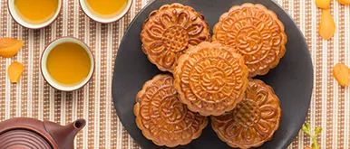
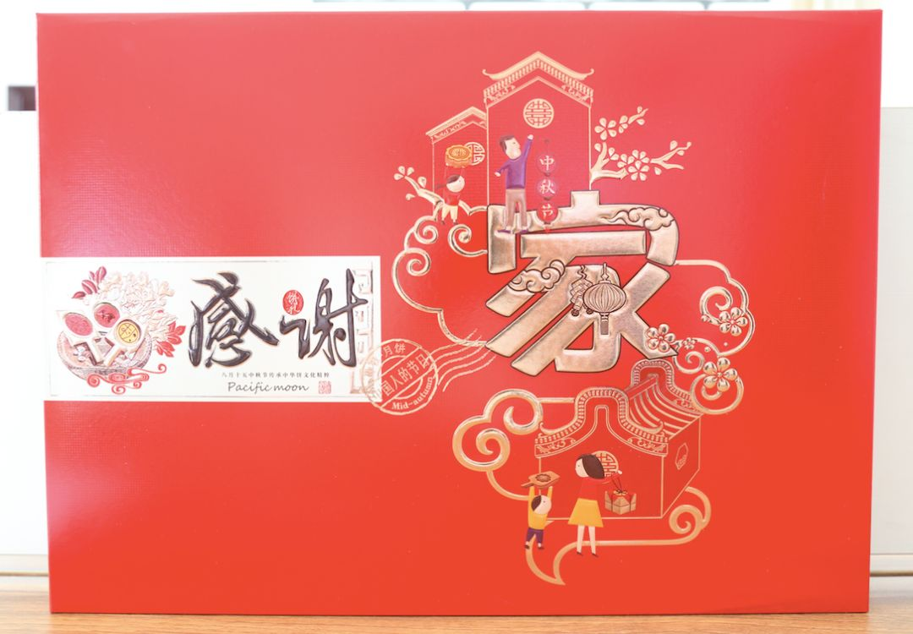
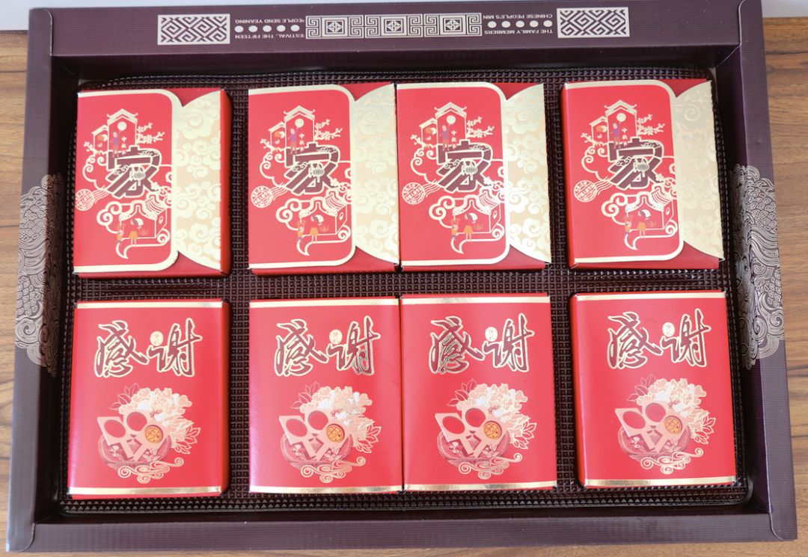
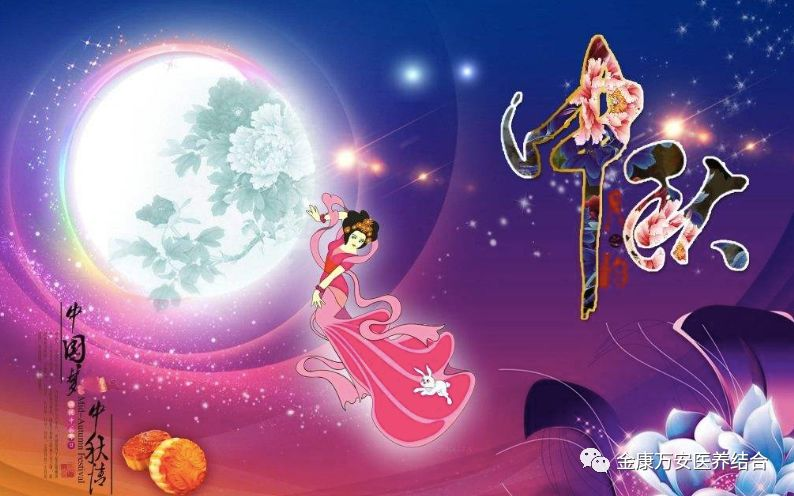
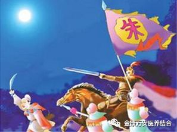
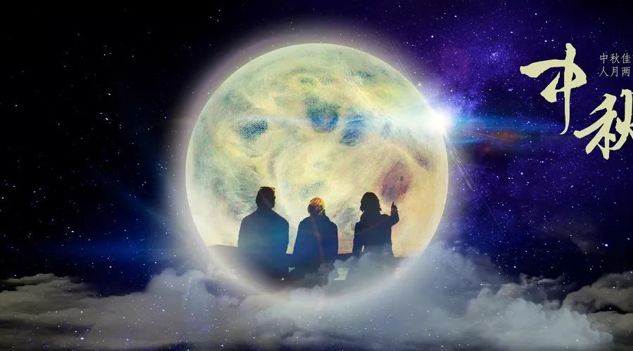

年年中秋，岁岁中秋，共聚中秋。金康万安祝大家中秋节快乐！
人气: "" 时间：2018-09-23
中秋节又名仲秋节，也叫团圆节，是我们中华民族的第二大节日，可谓家喻户晓，妇孺皆知。

值此中秋来临之际，漯河万安康复医院、万安老年公寓、金康护理院全体员工祝大家中秋快乐，阖家幸福！

在一年一度的中秋佳节到来之际，为了让金康万安的每一位家人度过一个欢乐圆满的中秋佳节，同时也为感谢大家的辛勤付出，让金康万安的每一位家人都能够感受到金康万安这个大家庭给予的温情，金康万安两院特意为院员工订购、制作了特制月饼，板栗月饼、绿豆月饼、伍仁月饼等各种口味都有! 在中秋前夕，听着关于中秋的美丽传说，品着甜甜的月饼，让大家感受到了浓浓的中秋节气息。

中秋节有着悠久的历史，和别的传统节日一样，也是慢慢形成的。

中秋节有着一段凄美的传说：相传古时天上有十个太阳，晒得庄稼枯死，大地冒烟，一名叫后羿的英雄，登上昆仑山，挽弓搭箭，一口气射下了九个太阳，因而很受人敬仰。后来，他娶了一位美丽善良的女子--嫦娥。有一天，后羿上昆仑山求道，巧遇王母，赐予长生丹，后羿不忍心撇下嫦娥，将仙丹交与嫦娥。不料被小人蓬蒙发现。
一天，蓬蒙趁后羿狩猎之时，叫嫦娥交出灵丹，嫦娥当机立断，将丹吞下，于是就飞天成仙，借住月亮上。后羿回家了解了事情的原委，痛不欲生，他追啊，跑啊，可是，他跑月亮也跑，他停月亮也停。他知道再也追不回嫦娥了，他举头望着天空中的一轮明月，突然发现月亮里仿佛出现了嫦娥的身影。后羿赶紧在院子里摆上嫦娥最喜欢的糕点，以此纪念嫦娥。从此，这一中秋祭月的习俗就这样流传开了。

月饼的出现始于元朝，由于元朝的残酷统治，中原广大人民纷纷起义，当时朝廷搜查得十分紧，军师刘伯恩想出妙计，将纸条放进饼中，纸条上写着：“八月十五起义。”再将饼运进义军军营，八月十五，一举攻城，攻下了元大都，朱元璋欣喜若狂，让全体将士与民同乐，将“月饼”作为食品赏赐群臣。于是，中秋就有了吃月饼的习俗。

中秋不仅是一个充满美丽传说的节日，也是一个富有诗情画意的节日，从古至今，有许多文人墨客为之写下一篇篇不朽的着作，有的咏月颂月，还有借月抒怀。苏轼的《水调歌头》，李白的《月下独酌》让人想起远在异乡的游子的思乡怀亲之情。
中秋节的习俗很多，形式也各不相同，但都寄托着人们对生活无限的热爱和对美好生活的向往。中秋节是人们一直都喻为最有人情味，最有诗情画意的一个节日。有人说，每逢佳节倍思亲，中秋节这一份思念当然会更深切。